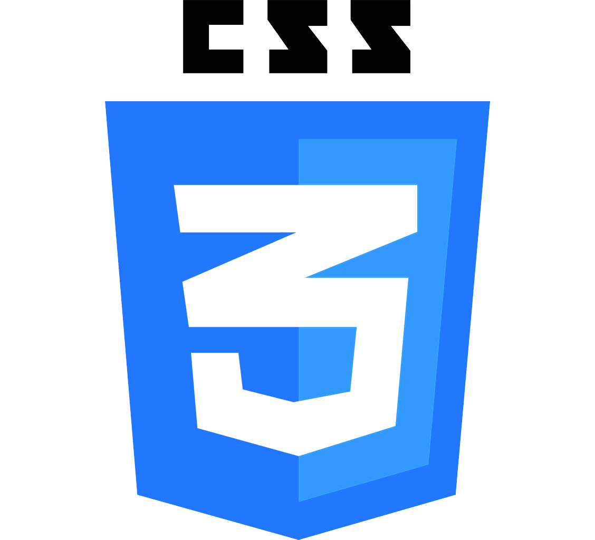

Suporte Técnico |Estudante de
Ciência da Computação
Transformando problemas técnicos em soluções simples.
Experiências Profissionais
Estagiário Suporte técnico TI - Openix Soluções em Software
Manutenção preventiva e corretiva de hardware e software Formatação e configuração de máquinas Instalação e atualização de sistemas e programas Suporte interno aos usuários (presencial e remoto) Configurações básicas de rede e resolução de incidentes Instalação e configuração de impressoras Atendimento ao público no setor de notas (abertura e reconhecimento de firma, autenticação de documentos).
Estagiário auxiliar TI - Cartório do barreiro
Manutenção e configuração de computadores e periféricos Suporte técnico presencial e remoto (hardware, software e rede) Administração de usuários (Google Workspace, sistemas internos e GPO) Suporte básico a telefonia Gestão de inventário e ativos de TI Orçamentos e apoio à evolução da infraestrutura Conhecimentos em Linux e automação com Ansible
Projetos
Minhas Habilidades
Minhas Ferramentas online

